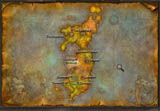
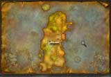
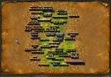
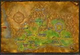
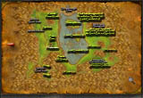
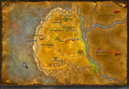

|
The World of Warcraft is a large game world and in
this section you can find maps to key locations
which will help you in your adventuring.
This
section is continually being added to highlighting
key locations in the game world. As more
locations are discovered more 'hot spots' will be
added to each map section.
We
have started the map from the world view and you
can zoom in and out of each region and major city
locations.
As
the Beta only features Azeroth we have not added
Kalimdor, this will be added at a later date. It's
also worth checking back frequently as we add to
and expand this section of the site throughout the
beta process.
Note
maps also show key monster/quest locations, ideal
if you get stuck and need to complete a quest to
move on.
Current
Updated World Locations
| World
Map |
 |
|
|
|
Azeroth
Map
The
eastern island and home to the Undead,
Humans, Gnomes, Dwarves and a whole host
of vile creatures
|
 |
Kalimdor
Map
The
western island is the homeof the Trolls,
Tauren and Orc with diverse barren lands,
grassy plains and rocky outcrops
|
 |
|
Dun
Morogh Map
The
the location for impressive Dwarven city
of Ironforge. Dwarves start their
adventure at the camp of Anvilmar in the
southwest of the map.
 Resource
Map
Resource
Map
|
 |
Mulgore
Map
The
Tauren starting location dominated by the
four island mountain city of Thuderbluff.
The region features steep hillsides and
grassy plains |
 |
|
Elwynn
Forest Map
This
region of Azeroth is the starting location
for the Humans and the location of the
mighty city of Stormwind. Humans begin
their journey at Northshire Abbey
Resource
Map
|
 |
|
|
|
Loch
Modan
Situated
to the east of Dun Morogh, this forested
region harnesses ogres, crocs and forest
creatures as well as the small town
outpost of Thelsmar. The map is dominated
by the large loch.
Resource
Map
|
 |
|
|
|
Westfall
Map
The
desolate farmlands to the west of Elwynn
forest, ideal for lvl 10+
characters.
|
 |
|
|
Current
Updated City Locations
|